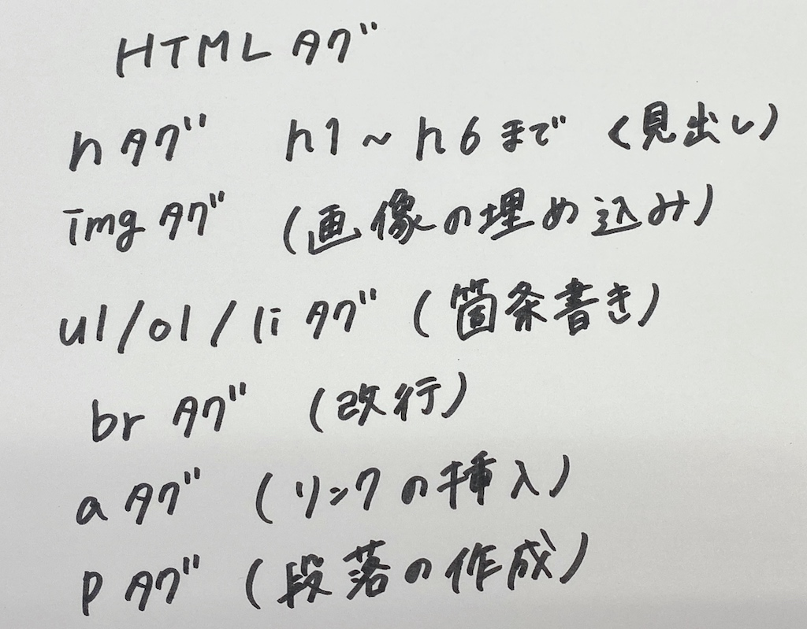

2.htmlについて
HTMLとは,「ハイパーテキスト・マークアップ・ランゲージ（Hyper Text Markup Language）」のことで、
WEBページを作成するための言語です。
”マークアップ”とは文章が構成されている要素がどのような役割を持っているのかを指示します。
コンピュータに理解できるよう意味を持たせてあげるために記号として
HTMLタグ
が目印をつけるための記号として使用されます。
よく使うタグとして

が挙げられます。
タグを使うことによって、文字にデザイン性を与えたり、リンクに誘導したり画像を貼ることができ、
文字に意味を持たせることができます。
トップページに戻る